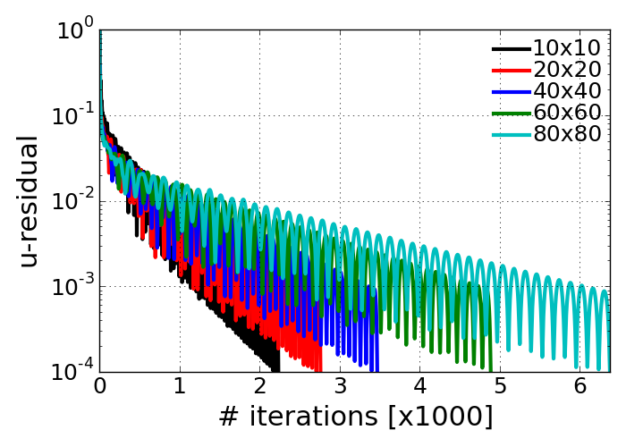
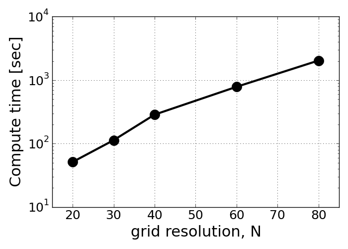

Problem1 - e¶
Discuss how the simulation speed depends on the grid resolution and time step.
The simulation for different grid resolutions were conducted with consistent convergence criterion as 0.01 % of normalized residual. The evolution of u-velocity residual with different grid spacing is placed on top of each other in the following plot. As the grid spacing become smaller, the more time integration was required to achieve the pre-specified convergence criterion. It also means the more grid points requires more computational time, which is illustrated as shown in the second figure.
Effect of grid spacing on the convergence history
Effect of grid spacing on the computational time to achieve the steady solution.

{kind=link}
{kind=link}
As observed in the previous homework problem, above observations are very typical in the fact that more iterations and more computational time are required for the higher grid resolutions. Specifically, in such a high resolution case, temporal updated quantity in distribution function is too small to rapidly approach to the steady solution, and it leads to more required iterations and again more computational time.